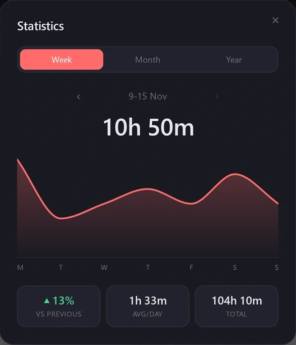
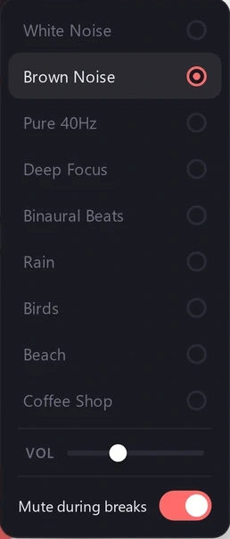

Focus statistics
See your focus time by week, month, and year. You can sync your progress and settings across PCs with an optional Google account.
A Pomodoro timer for Windows with custom focus sessions, breaks, and background sounds.
Free · Windows 10 and 11 (64-bit)


Mini Mode keeps your time and controls above other windows while you read a PDF, write, or take notes.


See your focus time by week, month, and year. You can sync your progress and settings across PCs with an optional Google account.

Choose from nine background sounds, including rain and brown noise, and six alarms. Set their volumes independently.

Adjust focus and break lengths, enable overtime, and save themes with your own colors.
Free, ad-free, and works offline. A Google account is optional for sync.